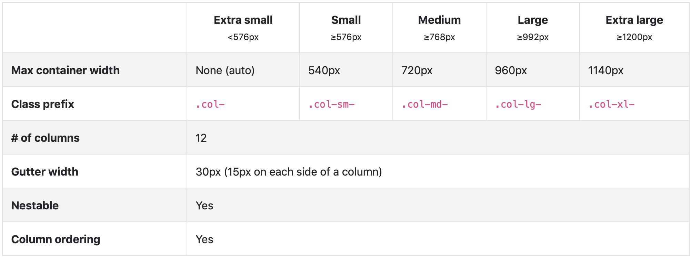

BOOTSTRAP's GRID
Comment ça marche
Le système de grille de Bootstrap utilise des conteneurs, de lignes et de colonnes pour mettre en forme et aligner le contenu.
Il est construit avec flexbox et entièrement responsive.
Exemple :
L'exemple ci-dessus crée trois colonnes de même largeur pour des petits, moyens, grands et très grands appareils à l'aide des classes prédéfinies. Les colonnes sont centrées dans la page avec la classe .container.
Options de grille
Bootstrap utilise les unités ems ou rems pour définir la plupart des tailles, les px sont utilisés pour les points d'arrêt de la grille et les largeurs de conteneur. En effet, la largeur de la fenêtre d'affichage est en pixels et ne change pas avec la taille de la police.
Tableau pratique :
Auto-layout columns
Utilisisation des classes de colonnes spécifiques aux points d'arrêt pour faciliter le dimensionnement des colonnes sans les numérotées
Equal-width
Exemple :
Les colonnes de même largeur peuvent être divisées en plusieurs lignes, mais il peut y avoir des bugs avec des anciens navigateur.
Il existe des solutions de contournement pour les anciennes versions de navigateur comme l'exemple ci-dessous.
Setting one column width
On peut définir la largeur d'une colonne et redimensionner automatiquement les colonnes soeurs.
Exemple :
Variable width content
On peut Utiliser les classes col-{breakpoint}-auto pour dimensionner les colonnes en fonction de la largeur naturelle de leur contenu.
Exemple :
Equal-width multi-row
On peut créer des colonnes de largeur égale qui s'étendent sur plusieurs lignes en insérant le classe .w-100 à l'endroit où on souhaite que les colonnes se mettent sur une nouvelle ligne.
Exemple :
Responsive classes
La grille de Bootstrap comprend cinq niveaux de classes prédéfinies pour la création de mise en page responsive.
All breakpoints
Pour des grilles identiques sur tous les appareils on utilisera les classes .col et .col- *. On Spécifiera une classe numérotée que lorsque on aura besoin d'une colonne de taille particulière.
Exemple :
Stacked to horizontal
En utilisant un seul ensemble de classes .col-sm-*, On peut créer une grille qui sera empilé et à l'horizontal aux points d'arrêt prédéfinis (sm md lg xl).
Exemple :
Mix and match
On peut combiner différentes classes pour chaque niveau si nécessaire.
Exemple :
Gutters
Les gouttières peuvent être ajustées en fonction des classes de remplissage et des marges négatives spécifiques aux points d'arrêt. Pour changer les gouttières d’une ligne donnée, on associe une margin négative sur le .row et un padding correspondant sur le .cols. Les conteneurs .container ou .container-fluid doivent également être ajustés pour éviter les débordements indésirables, en utilisant un padding correspondant.
Exemple :
Dans cet exemple On a augmenté le padding left-right de .col avec .px-lg-5, on compense avec un margin left-right négative avec .mx-lg-n5 sur le .row parent, puis ajusté le conteneur .container avec un padding left-right .px-lg-5.
Alignment
Utilitaires d'alignement flexbox pour aligner les colonnes verticalement et horizontalement
Vertical alignment
Exemple :
Horizontal alignment
Exemple :
No gutters
Les gouttières entre les colonnes peuvent être supprimées avec la classe .no-gouttières. Cela supprime les margins négatives de .row et le padding horizontal de toutes les colonnes enfants.
Exemple :
Column wrapping
Si plus de 12 colonnes sont placées sur une seule ligne, chaque groupe de colonnes supplémentaires sera inséré sur une nouvelle ligne.
Exemple :

Column breaks
Mettre les colonnes sur une nouvelle ligne nécessite d'ajoutez un élément de largeur 100% si on veut encapsuler les colonnes sur une nouvelle ligne. Normalement, ceci est fait avec plusieurs blocs qui ont la classe .row, mais toutes les méthodes d'implémentation ne peuvent pas en prendre compte.
Exemple :
On peut également appliquer ce changement de ligne avec des points d'arrêt spécifiques avec des classes d'affichage responsive prédéfinis.
Reordering
Order classes
Les classes .order sert à contrôler l'ordre visuel du contenu. Ces classes sont réactives. On peut donc définir l'ordre par point d'arrêt. Indiquer une valeur de 1 à 12 compatible pour les cinq niveaux de grille.
Exemple :
Il existe également des classes .order-first et .order-last qui modifient l'ordre d'un élément. Ces classes peuvent également être mélangées avec les classes numérotées .order-* selon les besoins.
Exemple :
Offsetting columns
On peut décaler les colonnes de la grille de deux manières:
- les classes .offset-
- et les utilitaires de marge.
Les classes sont dimensionnées pour correspondre aux colonnes, tandis que les marges sont plus utiles pour les présentations rapides où la largeur du décalage est variable.
Offset classes
On Déplace les colonnes vers la droite en utilisant les classes .offset-md-*. Ces classes augmentent la marge gauche d'une colonne de * colonnes. Par exemple, .offset-md-4 déplace .col-md-4 sur quatre colonnes.
Exemple :
En plus de l'effacement des colonnes aux points d'arrêt réactifs, On devra peut-être réinitialiser les décalages.
Exemple :
Margin utilities
On peut utiliser des utilitaires de marge tels que .mr-auto pour forcer les colonnes soeurs à s’éloigner les unes des autres.
Exemple :
Nesting
Pour imbriquer du contenu dans une grille, on ajoute une nouvelle colonne .row et un ensemble de colonnes .col-sm-* dans une colonne .col-sm-* existante. Les lignes imbriquées doivent inclure un ensemble de colonnes ne dépassant pas 12 (il n'est pas nécessaire d'utiliser les 12 colonnes disponibles).